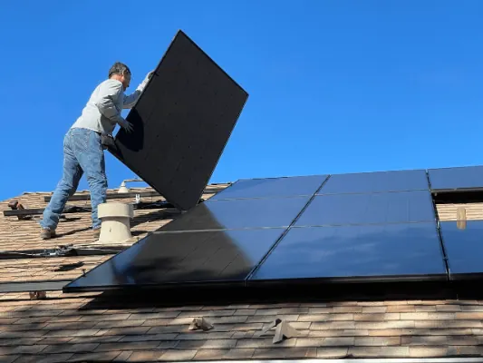
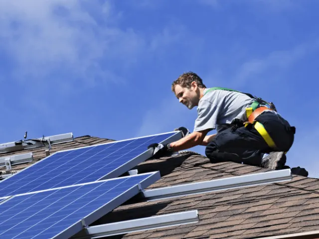
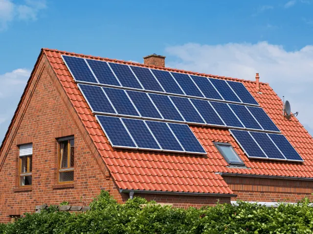

Laat de zon jouw huis verwarmen met zonnepanelen in Nijmegen
Gepubliceerd op 12 juni 2023, bijgewerkt op 26 februari 2024

Hoe lekker is het om in het zonnetje te staan, zowel voor jou als voor je huis. Beide krijgen er meer energie van. Dus wij willen je graag even laten stilstaan bij zonnepanelen, en wat ze voor jou kunnen betekenen. Laten we van de zon blijven genieten, op onze huid en in onze portemonnee.
Wat zijn zonnepanelen?
Zonnepanelen zijn energiefabriekjes die je bijvoorbeeld op het dak van je huis kunt laten plaatsen. De platen vangen zonlicht op en zetten die om in elektriciteit. Ze zijn gemaakt van meerdere zonnecellen die zonlicht omzetten in elektrische energie. Deze energie kan worden gebruikt om apparaten van stroom te voorzien, of kan worden opgeslagen in een batterij voor later gebruik. Zonnepanelen zijn ook nog eens duurzaam en milieuvriendelijk omdat ze geen schadelijke stoffen uitstoten tijdens het opwekken van energie.
Wat zijn de voordelen van zonnepanelen?
We hebben de voordelen even voor je op een rijtje gezet!
- Duurzaamheid: Zonnepanelen gebruiken zonne-energie, een hernieuwbare energiebron die altijd werkt is en geen CO2-uitstoot veroorzaakt. Dit draagt bij aan het verminderen van de afhankelijkheid van fossiele brandstoffen en het verminderen van de uitstoot van broeikasgassen. En dat is zeker nu meer dan ooit belangrijk.
- Kostenbesparend: Zonnepanelen kunnen je helpen om geld te besparen op je energierekening, vooral als je veel zonlicht hebt. Dus zorg ervoor dat je ze op een goede plek plaatst van het dak. Als je meer energie produceert dan je gebruikt, kun je deze doorzetten aan het net en hiervoor een vergoeding ontvangen. Of opslaan in een accu, maar die zijn wel weer prijzig.
- Waardevolle investering: Het installeren van zonnepanelen kan de waarde van je huis verhogen en kan een aantrekkelijke investering zijn op de lange termijn, omdat de prijzen van energie misschien wel blijven stijgen.
- Onderhoudsarm: Zonnepanelen vereisen weinig onderhoud en hebben een lange levensduur. Ze zijn ontworpen om te kunnen blijven werken in verschillende weersomstandigheden en zijn bestand tegen hagel en wind. En vaak krijg je ook en lange garantie na het plaatsen.
Onafhankelijkheid: Zonnepanelen kunnen je helpen om onafhankelijk te worden van het elektriciteitsnet en je eigen energie te produceren, vooral als je een batterijopslagsysteem hebt. Ze worden bijvoorbeeld gebruikt door mensen die geheel zelfvoorzienend willen leven.

Wat is de impact van zonnepanelen op het milieu?
Zoals ze we net al benoemd hebben, produceren zonnepanelen geen uitstoot van broeikaseffecten, maar juist schone energie. Daarnaast zijn er nog een aantal stoffen die niet in de lucht verdwijnen zoals: fijnstof, stikstofdioxide en zwaveldioxide. Allemaal schadelijke stoffen die de lucht vervuilen. Dus met zonnepanelen help je mee aan het verbeteren van de luchtkwaliteit.
Er worden grondstoffen bespaard, omdat je geen fossiele brandstof nodig hebt, maar de productie van zonnepanelen en het transport van de grondstoffen vraagt wel wat en heeft enige impact op het milieu. Gelukkig weegt dat niet op tegen de voordelen en de andere opties.
Hoe worden zonnepanelen geplaats en hoeveel heb je er nodig?
Het plaatsen van zonnepanelen begint met het bepalen van de meest ideale plek op het dak of in de tuin, waarbij er gelet wordt op de oriëntatie, helling, schaduwvorming en de grootte van het oppervlak. Vervolgens worden de zonnepanelen op de juiste manier geïnstalleerd en aangesloten op de omvormer en de elektriciteitsmeter. Hierbij wordt er rekening gehouden met de veiligheid, kwaliteit en duurzaamheid van het systeem.
Het aantal zonnepanelen dat nodig is hangt af van verschillende factoren, zoals het energieverbruik van het huishouden, de beschikbare ruimte voor de zonnepanelen en de hoeveelheid zonlicht die je daar ontvangt. Een gemiddeld huishouden in Nederland verbruikt ongeveer 3.500 kWh aan elektriciteit per jaar. Om dit energieverbruik te dekken, zijn ongeveer 10 zonnepanelen van 350 Wp (wattpiek) nodig, met een totale oppervlakte van ongeveer 20 m2. Een gemiddeld dak biedt dus genoeg ruimte.
Hoeveel zonuren heb je in Nijmegen per jaar?
Voor zonnepanelen in kiezen in Nijmegen, heeft zeker zin! Nijmegen heeft gemiddeld ongeveer 1550 zonuren per jaar, wat overeenkomt met ongeveer 4,2 uur per dag. Dit gemiddelde kan variëren afhankelijk van het seizoen en de weersomstandigheden. In de zomermaanden kan het aantal zonuren toenemen tot ongeveer 7 uur per dag, terwijl het in de wintermaanden kan dalen tot ongeveer 2 uur per dag.
Over het algemeen heeft Nijmegen een redelijk zonnig klimaat dat gunstig is voor het opwekken van zonne-energie. En er zijn genoeg bedrijven die ze met liefde voor je plaatsen. Let wel: het is een goede investering, en dat weten meer mensen. Veel bedrijven hebben daarom ook een volle agenda, dus houdt daar rekening mee.

Waar vind je een zonnepanelen installateur in Nijmegen?
Spara Energy B.V.
“Spara Energy B.V. is een dynamische speler in de markt van zonne-energie, die streeft naar het toegankelijk maken van duurzame oplossingen voor een breed publiek. Met een assortiment van kwalitatieve zonnepanelen en een klantgerichte benadering, zorgt Spara Energy B.V. voor naadloze integratie van groene energie in jouw dagelijks leven. Of je nu de energiekosten wilt drukken of een bijdrage wilt leveren aan een duurzamere wereld, Spara Energy B.V. staat voor je klaar met expertise en betrouwbare service.”
Off The Grid
“Off The Grid is een visionair bedrijf dat zich specialiseert in het leveren en installeren van zonnepanelen, met als doel het bevorderen van zelfvoorzienende en duurzame levensstijlen. Door de kracht van de zon te benutten, stelt Off The Grid klanten in staat om los te komen van traditionele energiebronnen en een actieve rol te spelen in de bescherming van onze planeet. Met een combinatie van technische expertise, innovatieve oplossingen en een diepgaande toewijding aan duurzaamheid, biedt Off The Grid een uitgebreid scala aan diensten die zijn ontworpen om te voldoen aan de unieke energiebehoeften van elk project. Of het nu gaat om het verlagen van uw energierekening, het verhogen van de waarde van uw eigendom, of het bijdragen aan een groenere toekomst, Off The Grid begeleidt u bij elke stap op weg naar energieonafhankelijkheid.”
Solar2Led BV
“Solar2Led BV is een innovatief bedrijf dat toonaangevend is in het leveren en installeren van zonnepanelen, en zich onderscheidt door het aanbieden van geïntegreerde, energie-efficiënte oplossingen. Met een passie voor duurzaamheid en een scherp oog voor kwaliteit, streeft Solar2Led BV ernaar om huiseigenaren en bedrijven te voorzien van hoogwaardige zonnepanelen die niet alleen zorgen voor een aanzienlijke verlaging van de energiekosten, maar ook een positieve impact hebben op het milieu. Solar2Led BV staat bekend om zijn deskundige installaties, betrouwbare service en toewijding aan klanttevredenheid. Of je nu een kleine residentiële installatie of een grootschalig commercieel project overweegt, Solar2Led BV is de partner die je nodig hebt voor een naadloze overgang naar schone, hernieuwbare energie.”
Klimaland
“Klimaland is dé specialist in het transformeren van huizen in de Gemeente Nijmegen naar duurzame energiecentrales met behulp van zonnepanelen. Door jarenlange ervaring en diepgaande kennis op het gebied van zonne-energie, staat Klimaland garant voor naadloze installaties en maximale prestaties van jouw zonnepanelen. Klimaland gelooft in een groene toekomst en zet zich in om de ecologische voetafdruk van huishoudens te verkleinen, terwijl de bewoners genieten van lagere energiekosten. Of je nu een klein woonhuis of een groot pand bezit, Klimaland levert op maat gemaakte oplossingen die aansluiten bij jouw specifieke behoeften en wensen, en draagt actief bij aan een duurzamer Nijmegen.”
OVERZICHT ZONNEPANELEN INSTALLATEURS
BEKIJKZonnepanelen in Nijmegen
Zin om te beginnen? In onze bedrijvengids vind je alle 3 installateurs in Nijmegen, met openingstijden, kenmerken en een kaart.
Bekijk alle 3 installateurs in Nijmegen
Heb je zelf een installateur? Laat je hier uitlichten.